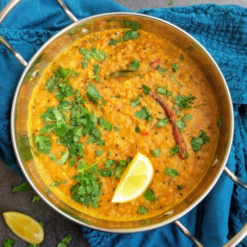

Dal Fry is a classic, comforting North Indian lentil dish where boiled, mashed lentils are simmered in a spiced stir-fry or tadka
It is usually made with split pigeon peas (toor dal) or a mix of lentils (moong and masoor), and is perfectly paired with steamed rice